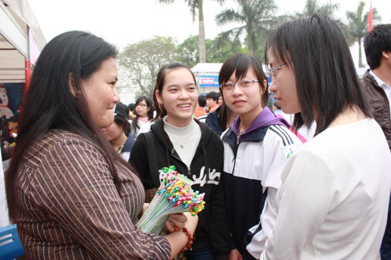

Giáo dục giới tính: Còn nhiều rào cản

Viết bởi Administrator Thứ sáu, 07 Tháng 12 2012 13:39
(GD&TĐ)-Mặc dù ngành Giáo dục đã tích cực triển khai nhiều hoạt động nhằm tăng cường giáo dục giới tính trong nhà trường nhưng do nhiều rào cản, những hoạt động này chưa thực sự đem lại kết quả như mong muốn.

Báo cáo của ông Phạm Vũ Thiên, Phó Giám đốc Trung tâm Sáng kiến Sức khỏe và Dân số về nghiên cứu giới và sức khỏe sinh sản cho thanh niên, HSSV nhấn mạnh đến rào cản về kiến thức về tình dục, sức khỏe tình dục của giáo viên cũng như cách thức đối thoại của giáo viên với học sinh về chủ đề này. Không được giáo dục về giới tính ở nhà trường hay trong gia đình, ngoại trừ một số giáo viên tham gia các chương trình thí điểm do các tổ chức quốc tế tài trợ nên chính bản thân nhiều giáo viên cũng không tự tin về kiến thức tình dục và sức khỏe sinh sản của bản thân.
Thêm nữa, dù nhà trường và giáo viên đã đầu tư nhiều nỗ lực trong việc đưa nội dung về tình yêu và tình dục vào các chương trình bồi dưỡng, tập huấn chẳng hạn như các hoạt động chính khóa hay ngoại khóa. Tuy nhiên, do thiếu các mục đích chung trong đối thoại về sức khỏe tình dục của vị thành niên, thiếu sự nhạy cảm về giới, thiếu tính riêng tư và thiếu các kiến thức và kỹ năng cần thiết để có thể thảo luận một cách hiệu quả với vị thành niên về chủ đề này, việc triển khai giáo dục giới tính trong bối cảnh nhà trường hiện tại vẫn còn hết sức thách thức và kém hiệu quả.
Thứ trưởng Bộ GD&ĐT Trần Quang Quý, tại cuộc hội thảo phổ biến kết quả nghiên cứu về giới và sức khỏe sinh sản cho thanh niên, HSSV vừa tổ chức tại Hà Nội cũng cho biết vấn đề giáo dục giới tính trong nhà trường hiện nay còn nhiều khó khăn. Một số ban chỉ đạo và lãnh đạo đơn vị của các sở GD&ĐT và của các cơ sở đào tạo làm việc chưa tích cực và kém hiệu quả, chưa thực sự quan tâm đúng mức đến các công tác này. Cán bộ, giáo viên phụ trách phòng, chống HIV/AIDS còn kiêm nhiệm nên rất thiếu thời gian đầu tư cho công tác phòng, chống HIV/AIDS nói chung, công tác giáo dục sức khỏe sinh sản, giới, giới tính và kỹ năng sống nói chung. Năng lực của cán bộ làm công tác giáo dục sức khỏe sinh sản, giới, giới tính, kỹ năng sống, phòng, chống HIV/AIDS còn hạn chế. Công tác truyền thông, giáo dục chưa có hình thức mới hấp dẫn đối với HSSV nên không thu hút được sự tham gia của học sinh.
Bên cạnh đó, công tác tư vấn, hỗ trợ HSSV trong giáo dục, chăm sóc sức khoẻ sinh sản vị thành niên cũng như các dịch vụ y tế thân thiện và an toàn cho HSSV hiện còn rất thiếu. Bên cạnh đó, chưa có chế độ kinh phí hoặc kinh phí đầu tư cho các công tác này chưa đáp ứng được nhu cầu ngày càng cao trong trường học. Việc lồng ghép giới trong việc xây dựng các văn bản quy phạm pháp luật, chương trình và dự án giáo dục chưa được quan tâm đúng mức, chưa được thể chế hóa...
Cần nâng cao chất lượng đào tạo về giới
Theo một đánh giá mới đây do UNESCO thực hiện, giáo dục giới tính đã được đưa vào chương trình giáo dục ở cấp tiểu học và trung học nhưng không nhiều trong bậc giáo dục đại học.
Theo một đề tài nghiên cứu nội dung đào tạo về giới trong các trường ĐH ở Việt Nam do Trung tâm nghiên cứu về Phụ nữ thuộc ĐHQGHN chủ trì, mặc dù hoạt động đào tạo, giảng dạy, nghiên cứu về giới thật sự nở rộ trong những năm gần đây, nhưng chúng chủ yếu diễn ra ngoài phạm vi của trường ĐH. Trong thực tế, hiện đang tồn tại một sự mất cân bằng khá lớn giữa đào tạo về giới trong xã hội và hoạt động đào tạo giới một cách chính quy trong trường ĐH dành cho sinh viên – những người được kỳ vọng sẽ làm thay đổi các mối quan hệ giới bất bình đẳng.
Hiện nay, một số các trường ĐH khối khoa học xã hội như ĐHKHXH&NV (ĐHQGHN), ĐH mở bán công TP. HCM, ĐH Khoa học Huế, Học viện Báo chí và Tuyên truyền...đã có nghiên cứu và giảng dạy về giới, tuy nhiên những chương trình nghiên cứu và giảng dạy về giới hoàn toàn riêng biệt và bị bó hẹp trong một số khoa chuyên ngành như Tâm lý học, Xã hội học và Công tác xã hội. Đối với một số trường ĐH thuộc khối ngành Luật, Kinh tế, Kiến trúc... giới được đưa vào giảng dạy bằng cách lồng ghép hoặc với tư cách là một môn tự chọn.
Công tác đào tạo, bồi dưỡng cho giáo viên trong lĩnh vực này cũng còn nhiều vấn đề đáng bàn. Theo khuyến cáo tại nghiên cứu về giới và sức khỏe sinh sản cho thanh niên, HSSV của Trung tâm Sáng kiến Sức khỏe và dân số, công tác đào tạo, bồi dưỡng cho giáo viên không chỉ tập trung vào kiến thức mà còn cả việc nâng cao thái độ và mức độ thoải mái của giáo viên về vấn đề tình dục của vị thành niên. Nội dung đào tạo, bồi dưỡng cần trang bị cho giáo viên những kỹ năng quan trọng như kỹ năng ra quyết định, từ chối, đàm phán, cách sử dụng bao cao su...để họ có thể truyền đạt lại cho học sinh của mình; đồng thời phải trang bị cho giáo viên các kỹ năng cần thiết để họ có thể nói về những vấn đề liên quan đến tình dục và sức khỏe sinh sản một cách vui nhộn và cởi mở.
(Nguồn: gdtd.vn)
itnbk.edu.vn- itnbk.edu.vn
- 19/02/2013 07:56 - Lưu ý khi ghi hồ sơ ĐKDT vào ĐH, CĐ 2013
- 18/02/2013 08:20 - Giáo dục đạo đức HSSV bằng môi trường văn hóa
- 18/02/2013 08:16 - Giáo dục phổ thông đã có những chuyển biến tích cự…
- 21/01/2013 07:48 - Tạm dừng mở mới ngành Tài chính ngân hàng
- 27/12/2012 20:17 - Nhiều điểm mới trong quy chế thi tốt nghiệp THPT
- itnbk.edu.vn
- 29/11/2012 07:42 - Học nghề cho... vui
- 28/10/2012 20:15 - Học sinh dự Olympic quốc tế đều đạt huy chương
- 28/10/2012 20:10 - Tìm cách giảm bạo lực học đường
- 22/10/2012 07:52 - Tạo công bằng cho giáo viên
- 12/10/2012 15:04 - Cô giáo nhập viện vì bài giảng “canh gà Thọ Xương”